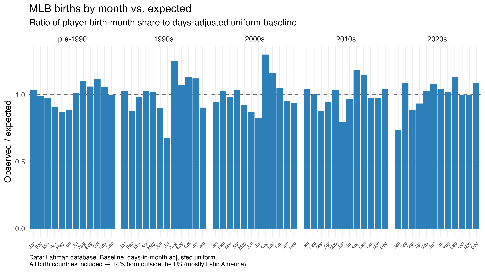
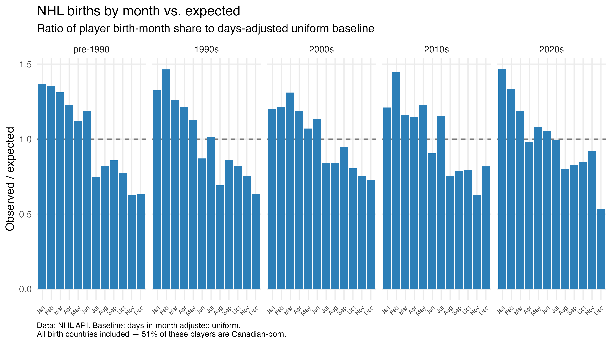
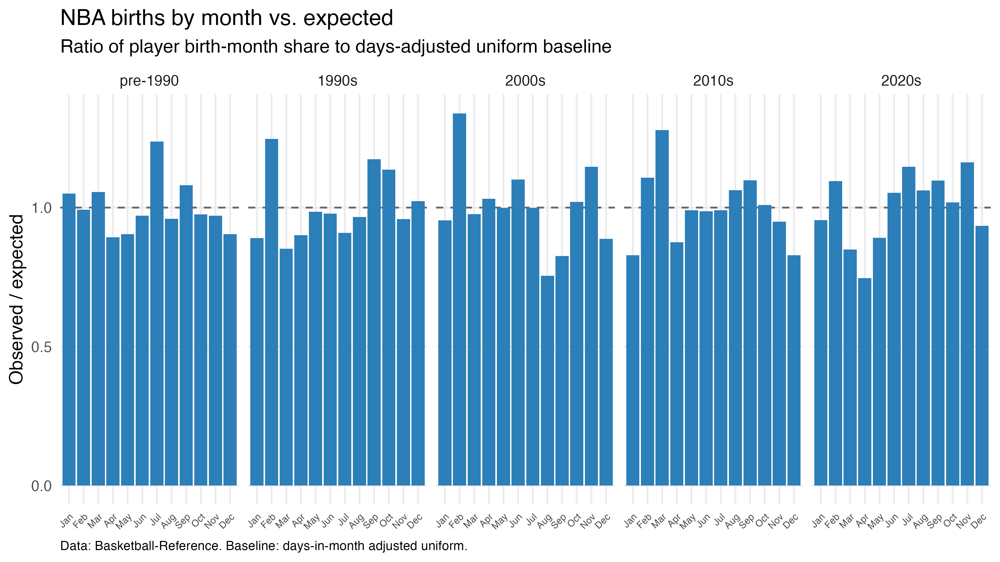

Where pro athletes actually come from
A famous 2006 study said pros come from small towns. Re-run with modern data — suburbs handled honestly, four leagues, hometown income included — the geography of making it looks very different.
The claim being tested
In 2006, a widely cited study in the Journal of Sports Sciences reported that American professional athletes in hockey, basketball, baseball, and golf were 11–21x more likely to come from towns of 50,000–100,000 people than from big cities, while cities over 500,000 dramatically underproduced. "Pros come from small towns" became sports-science folklore.
The study binned athletes by the raw population of their birthplace city — so a kid born in a 25,000-person suburb twenty minutes from a major downtown counted as a small-town kid. Suburbs were never controlled for (a limitation the study's lead author has acknowledged, along with the fact that proximity to larger metros has never been examined), and the analysis had not been systematically revisited for North American pro sports. This project is that revisit.
Method in one line: player birthplaces (and, for the NFL, high-school locations where available) matched to Census places; population, land area, density, and median household income joined from the decennial census and ACS at era-appropriate vintages; suburbs (census-designated places) included; boroughs and consolidated cities resolved; every join's match rate reported.
Football: the small-town effect isn't there — money increasingly is
For every rookie era, the share of NFL players born in places of each size is compared against the share of Americans living in places that size (a ratio of 1 = proportional). With suburbs counted properly, small towns don't overproduce — places under 2,500 people sit near 0.7 in every era. The engine is mid-size cities: 250k–500k places produced about 2x their share from the 1990s through the 2010s, easing to 1.63 in the 2020s. True big cities slid from 1.21 to 0.87.

Data table — representation ratio by place size and era
| Birthplace size | 1990s | 2000s | 2010s | 2020s |
|---|---|---|---|---|
| <2.5k | 0.69 | 0.62 | 0.71 | 0.74 |
| 2.5k–10k | 0.74 | 0.67 | 0.76 | 0.87 |
| 10k–30k | 0.74 | 0.82 | 0.85 | 0.96 |
| 30k–50k | 0.69 | 0.79 | 0.94 | 1.03 |
| 50k–100k | 0.97 | 0.97 | 0.97 | 0.94 |
| 100k–250k | 1.26 | 1.28 | 1.19 | 1.14 |
| 250k–500k | 1.97 | 2.15 | 2.10 | 1.63 |
| 500k+ | 1.21 | 1.07 | 0.95 | 0.87 |
The urban share is collapsing
Sorting hometowns by population density shows where the change concentrates: the most-urban tenth of hometowns supplied the 1990s' single biggest share of players, and that share has fallen era over era — the 2020s cohort's most-urban decile is its smallest. Recent players come disproportionately from mid-density places instead.

The money shift is real — even in football
Football's costs sit with institutions more than families: schools supply the pads, the fields, and the coaching, which has long made it the most accessible major sport for an individual kid — but not a free one. Those institutional costs are paid by communities, and well-funded programs live where the tax base does. With that in mind: ranking every hometown by median household income (population-weighted, era-matched vintages), the share of NFL players from the richest quarter of American places has gone from 10% to 25% across four rookie eras, while the share from the poorest quarter fell from 43% to 33%. The trend holds within each income vintage separately, so it isn't a data artifact.
Both facts matter: the NFL still draws disproportionately from poor places — a 33% share against a proportional 25% — but the direction of travel is unmistakably toward affluence. What this data can't yet separate is the mechanism: families buying development directly (private position coaching and 7-on-7 circuits have grown fast), or richer communities buying better programs. The two imply different fixes, and the cross-sport comparison below is the natural test.

Where the money effect lives has also moved. In the 1990s, rich hometowns were underrepresented across the board — least severely in dense metros. By the 2020s the picture inverted: players from affluent low- and mid-density places now appear at or above their population share, while affluent urban cores don't. The rich-kid pipeline, to the extent one exists, runs through the suburbs.

Born in X, raised in Y
Birthplace studies measure where the hospital was, not where an athlete learned the game. For 4,548 modern NFL players with both a birthplace and a geocoded high school, 35% went to high school in a different city than they were born in. Where the high school is known, it defines the hometown used here.
The map
Per capita, the South glows: Noxubee County, MS (611 players per million residents), Fairfax City, VA (494), Morris County, TX (492) — and New Orleans, which has sent 142 players to the NFL since 1990 (392 per million).

Birth month barely matters in football
The other half of the 2006 study was when athletes are born. The NFL shows almost no relative age effect — no month runs more than ~15% above baseline in any era. Compare that with hockey (see the NHL tab), where the effect is unmistakable.

Baseball: the most suburban sport in the set
Baseball's geography is the sharpest rebuke of the small-town story: US-born MLB players from places under 2,500 people appear at 0.16–0.35x their population share — the deepest rural deficit of any league. Everything from 50k up overproduces, with the familiar 250k–500k peak (2.06x in the 1990s, easing to 1.71 in the 2020s) and big cities right at proportional before slipping to 0.90.

One reading: modern baseball is a backyard-scarce, facility-dependent sport — travel ball, showcases, year-round leagues — and those live where suburban density and money do. The income join for MLB (and the club-sport comparison it enables) is the next analysis pass.
The map
Per capita since 1990: Fairfax City, VA (304 per million), Defiance County, OH, and the city of St. Louis (150 per million, 42 players — the highest raw count per capita of any sizable baseball county). California and the Sun Belt dominate raw volume.

Birth month
MLB's birth-month distribution is close to flat — September runs modestly hot in recent eras (≈1.13–1.15x, and August hit 1.19x in the 2010s, consistent with late-summer youth-baseball age cutoffs), but nothing approaching hockey's skew.

Hockey: where the 2006 story half-survives — and the birthday effect fully does
Two caveats first: the geography here covers US-born players only (just under 1,000 matched across the four eras — hockey's talent pool is majority Canadian), and with roughly 200–400 players per era the size bins are noisy; the chart below pools eras in response. The census match rate is also lower than other sports (87–92%).
Within those limits: hockey shows the strongest anti-big-city pattern of the four sports — 500k+ metros never reach 0.8 in any era — while the 250k–500k band peaks above 2x, and the rural deficit, though real, is shallower than baseball's or basketball's. Hockey's geography is small-metro and northern: the per-capita map is a Minnesota–Michigan–New England story.

The map
Per capita since 1990: Itasca County, MN (198 per million), Grand Forks County, ND, Clay County, MN — the northern hockey belt, exactly where rinks, winters, and youth hockey culture concentrate.

The January effect is real, large, and stable
Hockey is the sport that made the relative age effect famous, and the front half of the effect shows up here in every era: January and February births run 1.2–1.5x expected. The matching late-year deficit is there too, though noisier at these sample sizes — December 2020s births bottom out at 0.53x. A kid born just after the calendar-year age cutoff is the biggest, oldest kid on every youth team — and decades later, the NHL roster still remembers. (This chart includes all NHL players regardless of birth country; the pool is majority Canadian.)

Basketball: the urban exception
Basketball breaks the pattern the other three sports share. Big cities (500k+) are the only place-size where the NBA overproduces heavily in every era — 1.84x in the 1990s, still 1.57x in the 2020s — and the 250k–500k band has risen from 1.94x to 2.20x, the highest reading anywhere in this study. Small towns barely register (0.21–0.67x). Where football, baseball, and hockey are drifting away from the metropolis, basketball remains the city's game — increasingly concentrated in exactly the mid-size-to-large metros everyone else is leaving.

The map
Per capita since 1990: the city of St. Louis (72 per million), New Orleans (61), and Hinds County, MS — Jackson (57). Basketball's per-capita map is the most urban of the four: independent cities and urban-core counties, not small-county hotspots.

Birth month
Like football and baseball, basketball shows no meaningful relative age effect — the birth-month chart is flat within noise in every era.

Four sports, one engine, one exception
Put the leagues side by side and the revision of the 2006 story writes itself. No American major league is powered by small towns. Every league's rural bins sit below proportional in both decades shown. Every league shares the same engine — mid-size cities of 250k–500k, at roughly 2x — which is where the "small-town" finding actually lived once suburbs are counted honestly: not Mayberry, but Des Moines, Baton Rouge, and Tulsa.
The divergence is at the top of the size scale. Football, baseball, and hockey all underproduce in 500k+ metros, and increasingly so. Basketball alone stays big-city — and its mid-size peak is still rising.

When you're born vs. where you're born
The birthday half of the 2006 study survives only where the youth system creates it: hockey's calendar-cutoff club pyramid produces a large, stable January–February surplus, while football, baseball, and basketball — school-based or later-specializing — show essentially none. Where matters in every sport; when only matters where the development system makes age an advantage.
The money question
The leagues differ in who pays for development: football's costs are carried mostly by schools and communities, while baseball and hockey run through club systems that bill families directly. For the NFL, the shift toward affluent hometowns is already unambiguous — the richest quarter of American places went from producing 10% of players to 25% in three decades (see the NFL tab). The club-sport comparison is the natural next test: if baseball and hockey show steeper income gradients still, the family-pay account of American talent production gets much stronger; if football matches them, the story is more about community wealth than parents' checkbooks. That join is queued next.
Honest limitations
- Coverage windows differ by source. NFL birthplaces come from ESPN records (~90% of 1990+ rookies; thinner for 2000s–2010s fringe players). MLB (Lahman) and NBA (Basketball-Reference) are near-complete; NHL geography is US-born only with small samples (200–400 per era) and an 87–92% match rate.
- Era cohorts are career-start decades, and cohort edges can differ by one season across sports because the sources report first seasons differently.
- Birthplace ≠ hometown. The NFL analysis substitutes high-school location where known (35% of players differ); other sports currently use birthplace only. Birthplace reporting also gravitates toward metro anchor cities, which flatters urban cores slightly.
- Population and income vintages are the nearest census (2000 / 2010 / 2023) rather than each player's exact childhood year, and the 2010s cohort has no true income vintage of its own.
- Township-form municipalities (New Jersey especially) aren't Census "places" and account for most unmatched players (~3–4%).
What's next
- Income gradients for MLB, NHL, NBA — the pay-to-play cross-sport test.
- High-school hometowns beyond the NFL (the source data exists for MLB and NBA).
- Extending the NFL era comparison to pre-1990 rookie classes.